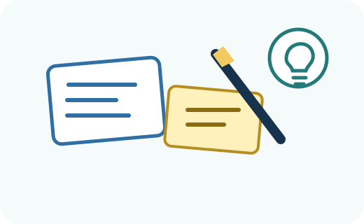
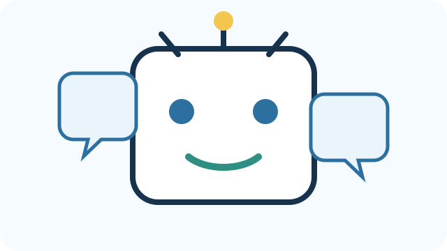

Start here
About learning: getting an answer is not the same as learning. Look for changes in what a person understands, remembers, explains, decides, or can do independently.
About AI: generative AI can produce plausible language, examples, questions, and ideas, but it does not know your learner's experience. Treat AI output as a suggestion to inspect—not as evidence about the learner.

Make something fast
Build before you know the answer
Grab paper, an index card, sticky note, marker, or whatever is nearby. This is not your final solution. It is a fast reminder that the League is about making and testing, not only filling out forms.
Press the button, then give yourself only two minutes.
After two minutes: what did you notice?
- What did your object or activity make the learner do?
- What did you assume about what would help?
- What would you need to know about a real learner before deciding whether this idea is useful?
Keep the energy, not the solution. Empathize now helps you learn whether your first idea addresses the real problem.
Quick challenge
Which question would get you the most useful answer?
Pick first. The explanation comes after you choose.
Choose an answer.

Learn the basics
Start with learning, not technology
Learning leaves evidence
Look for something the learner can remember, explain, apply, compare, monitor, or do more independently—not simply whether they received the correct answer.
Difficulty can have different causes
A learner may need prior knowledge, clearer representation, a better strategy, useful feedback, more retrieval or practice, or an accessible way to participate. Do not assume the cause from one error.
AI has several possible roles
AI can help research, generate alternatives, prototype interactions, or become part of a final tool. It can also hallucinate, oversimplify, or substitute for thinking. Your team decides its role.
Plan the interview
Your mission: get the story without leading the person
You are not trying to prove your idea. You are trying to understand what the person does, where things change, what they already try, and what you still do not know.
After the interview: collect clues
Do not diagnose the person. Record what you heard and observed so Define can test possible explanations.

Turn notes into clues
Listen for the learning experience
Ask for a recent example
“Tell me about the last time…” is usually more useful than “Would you like a tool that…?”
Ask the person to show the task
What people do can reveal something they do not think to mention. Use privacy-safe examples and follow advisor guidance.
Separate symptoms from possible causes
“I got the answer wrong” is a symptom. “I do not know how many intervals are between these labels” is closer to a breakdown you can investigate.
Save questions, not conclusions
At the end of Empathize, it is okay to be uncertain. Define is where you test possible explanations.
Optional practice
Practice an empathy interview with a simulated learner
This does not replace listening to a real person. It gives you a low-stakes way to practice asking open, neutral follow-up questions first.
- Copy the generated practice prompt.
- Open the AI tool your advisor or school permits.
- Conduct a short interview without guessing the problem too early.
- Ask the AI for feedback on whether your questions were open and neutral.
- Return to the real interview remembering that a simulation is practice—not evidence about your actual learner.

Check together
Empathy checkpoint
Share your notes with your advisor. Together ask: Are we describing a real learning experience? Did we hear evidence, or only requests for a particular solution? What should we investigate next?
Are you hearing directly from the learner rather than assuming what they need? Could language, instructions, sensory access, pacing, device access, or the way information is represented be contributing to the difficulty?

Save and move on
Before you move on, you should have
Interview notes + what you heard, observed, changed your mind about, and still need to know.
Your work stays in this browser unless you download it. Save a stage record before switching devices, clearing browser data, or relying on this work later.
Ready to move on?
Mark this stage complete when you have the stage artifact and have completed the advisor checkpoint where one is listed. Completion means you have enough evidence to make the next decision—not that the work can never change.